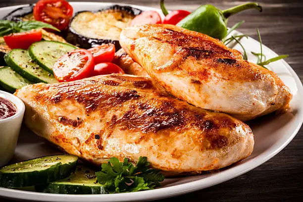

Filé de Frango
Filé de Frango grelhado, Arroz, Feijão, Purê de Batata e Molhos.
3 Filés de peito de Frango, 2 Pimentões, 1 cebola, 1 xícara de chá de cenoura, 2 Colheres de sopa de picado, 3 Colheres de sopa de Shoyu, Sal a gosto.

Temaki
Salmão, Algas, Arroz
Fatias de Salmão fresco, 50g de Arroz, 1 Folha média de Algas.